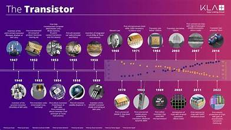

🔬 Module 1 – VLSI Foundations & the MOSFET
Pick a topic below. Finish with the animated NMOSFET and the interactive class.
1. Moore's Law
In 1965 Gordon Moore observed that the number of transistors on a chip was doubling at a steady pace. Since about 1975 the pace is taken as a doubling roughly every 2 years.
Real chips follow this trend only roughly, and it has slowed as transistors approach atomic dimensions.
2. History of IC Invention

3. IC Technology – Scales of Integration
| Scale | Name | Typical transistors per chip* |
|---|---|---|
| SSI | Small-Scale Integration | up to ~100 |
| MSI | Medium-Scale Integration | ~100 – 1,000 |
| LSI | Large-Scale Integration | ~1,000 – 100,000 |
| VLSI | Very Large-Scale Integration | ~100,000 – 10 million |
| ULSI | Ultra Large-Scale Integration | above ~10 million |
*Ranges differ between textbooks. Use your prescribed textbook's values in exams.
4. VLSI Design Flow
Click a stage, or press play to walk through the whole flow.
5. BJT vs MOSFET
| Feature | BJT | MOSFET |
|---|---|---|
| Terminals | Base, Collector, Emitter | Gate, Drain, Source (+ Body) |
| Control | Current controlled (base current) | Voltage controlled (gate voltage) |
| Input resistance | Low to moderate | Very high (insulated gate) |
| Carriers | Both electrons and holes (bipolar) | One type (unipolar) |
| Static power | Higher | Very low in CMOS |
| Packing density | Lower | Higher, easy to scale |
| Typical use | Analog, high-speed, power stages | Digital VLSI, memory, processors |
6. Types of FET
| Type | Channel | Default state (VGS = 0) |
|---|---|---|
| JFET | n or p | ON (normally conducting) |
| MOSFET – enhancement | n or p | OFF, needs gate voltage to form a channel |
| MOSFET – depletion | n or p | ON, gate voltage can remove the channel |
7. Animated NMOSFET
Move the sliders. Threshold voltage Vt = 1 V.
Rules: VGS < Vt → cutoff. VGS ≥ Vt and VDS < VGS − Vt → linear. Otherwise → saturation (channel pinches off near the drain).
Current values use a simple model with k = 1 mA/V², for teaching only.
8. Interactive Class
Step 1. Go to the NMOSFET tab and try: VGS = 3 V with VDS = 1 V, then with VDS = 4 V. Watch the channel and the electrons.
Step 2. Answer the questions. You need 4 out of 5 to complete Module 1.